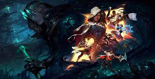

League of Legends
Főbb információk

A League of Legends (rövidítve: LoL) valós idejű stratégiai játék, illetve online többjátékos csatamező, melyet a Warcraft III: The Frozen Throne videójátékhoz készült Defense of the Ancients (röviden DotA) mod ihletett. A játék fejlesztője és egyben kiadója a Riot Games; Kínában a Tencent Holdings forgalmazza.
A játék bejelentésére 2008. október 7-én került sor; a zárt bétateszt 2009. április 10-én vette kezdetét és 2009. október 22-én ért véget. Ezután a tesztelés lehetősége mindenki számára elérhetővé vált. A játék végül 2009. október 27-én jelent meg.
Játékmenet
A játékos regisztráció után az úgynevezett láthatatlan "Idéző" szerepébe bújik, aki egy egyedülálló mágikus képességekkel rendelkező hőst tud irányítani akinek célja, hogy csapattársai segítségével legyőzze az ellenfél csapatot. A három különböző pályán a játékosok két egyenlő, 3 illetve 5 fős csapatokra oszlanak, mindenki egy általa vagy véletlenszerűen választott hőst irányítva. A csapatok a térkép két átellenes pontján kezdenek egy Érkező Medence (Spawn Pool) nevű helyen, a Nexus (főközpont, szó szerint: összeköttetés) mellett. Az ellenfél Nexusának elpusztításával lehet megnyerni a játékot, vagy ha az ellenfél csapata feladja.
A hősök a játék során folyamatosan tapasztalatot és aranyat gyűjtenek, ellenséges lények (hősök és minionok) illetve semleges szörnyetegek legyilkolásával, valamint tornyok és inhibitorok lerombolásával. Az aranyból különféle tárgyakat vehetnek, amelyek fokozzák a hatékonyságukat, képességeik erejét, vagy éppen védelmet adnak. Első szinten kezdenek és a 18. szintig fejlődhetnek minden játék alkalmával, míg az Idézői szint, folyamatosan növekszik.